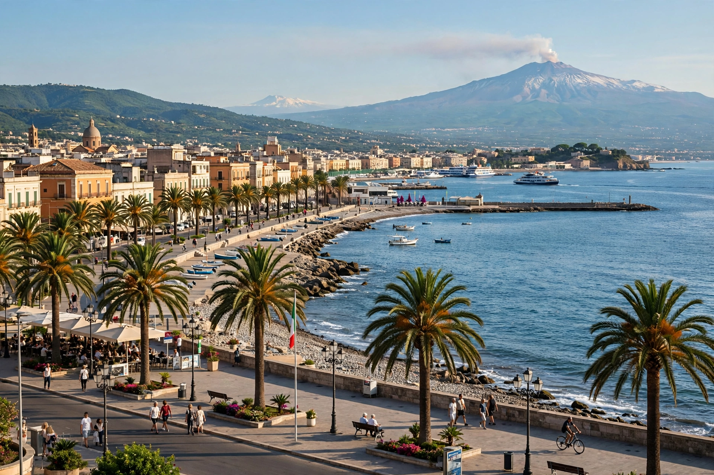

| Reggio Calabria | |
|---|---|
| Region | Calabria, Italy |
| Population | ~170,000 (municipality) |
| Founded | 8th century BC (as Rhegion) |
Reggio di Calabria, commonly called Reggio Calabria, is a city in southern Italy, the largest city in Calabria and seat of its metropolitan city. It lies on the Strait of Messina, at the 'toe' of the Italian Peninsula, facing Sicily.
Founded by Greek settlers from Chalcis around 720 BC as Rhegion, it was an important city of Magna Graecia. It passed through Roman, Byzantine, Norman, Spanish and Bourbon rule. The city was devastated by the 1908 Messina earthquake and rebuilt in Art Nouveau style.
The National Archaeological Museum houses the Riace bronzes, two celebrated 5th-century BC Greek statues recovered from the sea in 1972. Other landmarks include the Aragonese Castle, the cathedral, and the Lungomare Falcomatà promenade, noted for its views across the strait to Mount Etna.
Reggio is a port and administrative centre, known for bergamot citrus cultivation in its surrounding area, used in perfumery and Earl Grey tea.